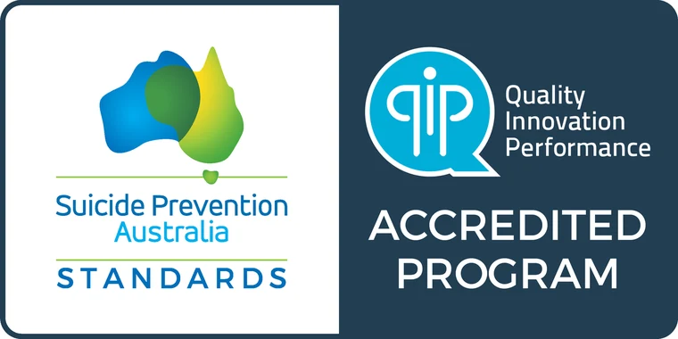
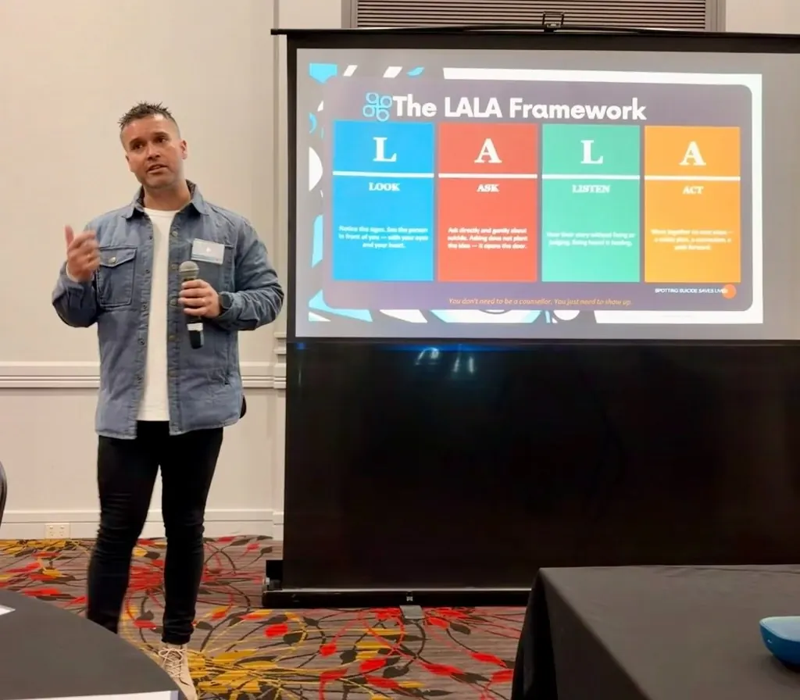
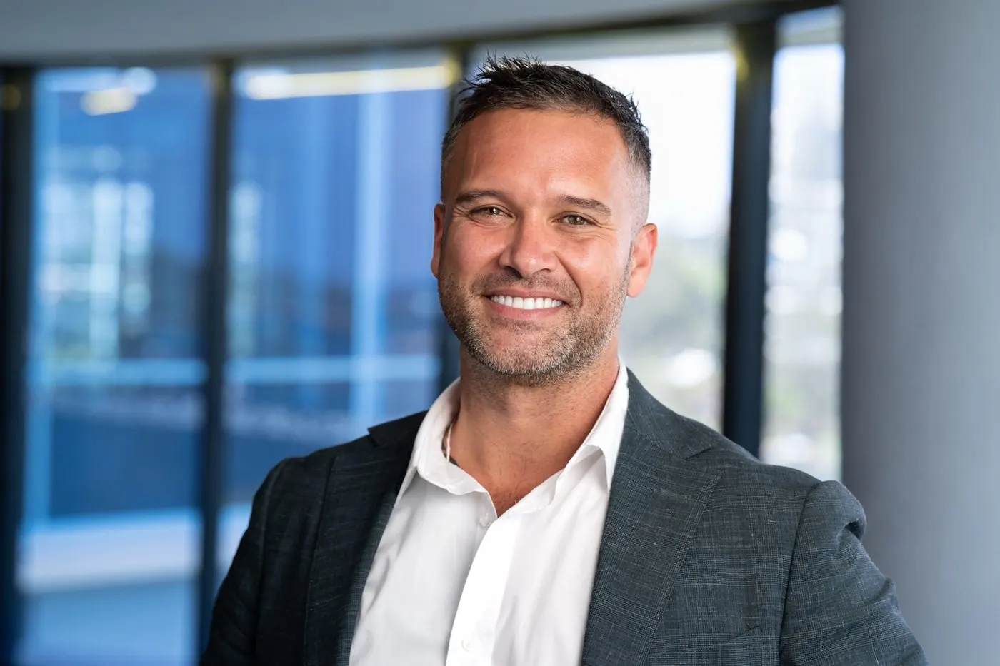

Suicide prevention training, built by community, for community.
I-SPOT gives your staff and community practical, trauma-informed crisis intervention skills. It is designed, owned and led by Aboriginal and Torres Strait Islander practitioners, and delivered face-to-face or online across Australia, Canada and Aotearoa New Zealand.

Accredited against the Suicide Prevention Australia Standards and by QIP, valid to September 2028. View the certificate
Why organisations trust I-SPOT
-
100% Indigenous-owned
Designed, led and delivered by Aboriginal and Torres Strait Islander practitioners.
-
Independently accredited
The first culturally safe, Indigenous-led program of its kind to be accredited.
-
Recognised nationally
Highly Commended, Priority Populations, 2026 Suicide Prevention LiFe Awards.
-
Three countries
Delivered with First Nations communities in Australia, Canada and Aotearoa New Zealand.
Training for organisations that support First Nations communities
Whether you're equipping a frontline team or embedding cultural safety across a whole workforce, there's a program sized for you.
ACCHOs and health services
Give clinical and community staff the confidence to recognise risk and respond safely, through a cultural lens mainstream courses miss.
Community & Frontline WorkshopNot-for-profits and community services
Train your team once, then license your own facilitators so capability stays inside your organisation for the long term.
Train-the-TrainerSchools and youth services
An age-appropriate program that gives students, educators and youth workers practical tools to support themselves and each other.
Youth ProgramGovernment and RAP organisations
A structured rollout that embeds cultural safety and trauma-informed practice across your workforce, in step with your RAP.
Organisational Cultural SafetyCrisis intervention that starts with cultural safety
Mainstream suicide-prevention training wasn't built with Aboriginal and Torres Strait Islander communities in mind. I-SPOT was created to close that gap, combining depth-psychology-informed facilitation with real-world cultural knowledge.
Participants leave with skills they can use straight away: in community, on Country, and in the organisations that serve them.
Read our story
Look
Recognise the signs of suicide risk in culturally relevant ways, not just clinical checklists.
Ask
Build the confidence to ask clearly and directly about suicide, with respect and safety.
Listen
Listen without judgement, and hold space for stories of pain and lived experience.
Act
Co-create a safety plan with the person, drawing on both cultural and clinical tools.
Four programs, one framework
Every program is trauma-informed, built around LALA, and can be delivered face-to-face, online or as a blend.
-
Community & Frontline Workshop
The core I-SPOT workshop: recognising distress, responding safely in a crisis and connecting people to support.
Enquire -
Train-the-Trainer
License your own staff to deliver I-SPOT, so facilitation stays close to the community it serves.
Enquire -
Youth Program
An age-appropriate adaptation for schools and youth services, delivered in a way that feels relevant, not clinical.
Enquire -
Organisational Cultural Safety
A structured rollout that matures alongside your Reconciliation Action Plan, from Reflect through to Elevate.
Enquire
Not sure which fits? We'll recommend one after a short conversation.
See full program detailsHow booking works
No commitment until you're confident it's the right fit for your people.
Send an enquiry
Tell us about your organisation, who you support and any timeframes you have in mind.
Talk it through
We reply within two business days to discuss your community, your team and the right program.
Training is delivered
Face-to-face, online or blended, wherever your team is, across Australia, Canada and Aotearoa New Zealand.

Founded by Eli Toombs, a proud Kamilaroi man
Prevention works best when it's led by the people closest to the problem, and closest to the solution.
Eli ToombsFounder and Director, Connection Works
Drawing on a background in trauma-informed practice and depth psychology, Eli built I-SPOT to be the training he wished existed: one that treats cultural knowledge as a strength to build from, not an afterthought.
About Eli and Connection WorksCommon questions
More answers on accreditation, licensing and RAP alignment are on our Resources page.
Who is I-SPOT training for?
Community members, frontline and health workers, young people and whole organisations. Our four programs cover different roles and levels of depth, so there's a starting point for most audiences.
Is training delivered online, in person, or both?
Every I-SPOT program can be delivered face-to-face, online, or as a blend of both, depending on what suits your community, team or organisation.
Is I-SPOT accredited?
Yes. I-SPOT is accredited against the Suicide Prevention Australia Standards and holds QIP (Quality Innovation Performance) Accredited Program status, valid from September 2025 to September 2028.
Can our own staff become facilitators?
Yes. Our Train-the-Trainer program licenses your staff to deliver I-SPOT internally, so cultural safety capability stays inside your organisation for the long term.
Bring culturally safe crisis-intervention training to your organisation
Whether you're an ACCHO, a not-for-profit, a school or a government agency, we'll help you find the right program for your people.
- Response time
- Within two business days
- Delivering in
- Australia, Canada and Aotearoa New Zealand